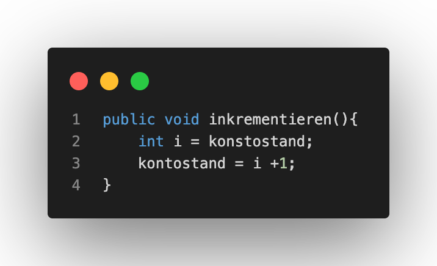
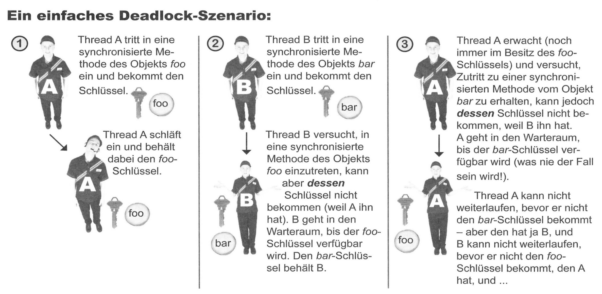

Das Schlafenlegen von Threads
Das Verhalten des Thread-Schedulers ist nicht kalkulierbar und vorhersehbar. Das Ziel ist es somit das Programm so zu schreiben, dass es nicht auf ein bestimmtes Verhalten abzielt. Ein Ansatz zur Umgehung des Problems ist das Blockieren eines Threads für einen bestimmten Zeitraum. Der blockierte Zustand wird dabei auch als schlafender Zustand des Threads bezeichnet. Dabei kann der Thread erst nach Ablauf der bestimmten Zeit wieder laufen. Wie bereits erläutert ist dies jedoch nur ein Ansatz zur Behebung dieses Problems. Da wir den Algorithmus nicht genau kennen, ist der Thread-Scheduler weiterhin nicht voll kalkulier- und kontrollierbar.
Übung 5
Um dieses Problem zu visualisieren und beobachten, haben wir in Übung 5 zwei Threads erzeugt und deren Verhalten analysiert:


Nebenläufigkeitsprobleme von Threads
Bei Threads können Nebenläufigkeitsproblemen und somit Konkurrenzsituationen entstehen. Nebenläufigkeitsprobleme treten auf, wenn mehrere Threads mit den gleichen Heap-Objekten arbeiten. Im schlimmsten Fall kann es dabei zu Datenverfälschung kommen. Das Problem ist hierbei, dass Threads unabhängig voneinander arbeiten und somit nicht wissen was ein anderer Thread gerate macht. Daraus folgt, dass die Threads strikt ihre Prozesse abarbeiten, sobald sie im Zustand laufend sind.
Veranschaulichung des Nebenläufigkeitsproblems
Das Szenario ist ein Ehepaar, das ihr Konto nicht überziehen möchte. Der Ehemann überprüft zuerst den Kontostand und das System zeigt ihm an, dass noch 100€ verfügbar sind. Er möchte 50€ abheben, doch bevor er dies tun kann, schläft er kurz ein. Seine Ehefrau überprüft nun auch den Kontostand und sieht ebenfalls, dass noch 100€ zur Verfügung stehen. Die 100€ hebt sie ab. Danach wacht ihr Ehemann wieder auf, ohne zu wissen, dass er geschlafen hat, und hebt die 50€, da er zubor den Kontostand geprüft hat und sich sicher ist noch 100€ auf dem Konto zu haben, ab. Nun ist es geschehen und das Konto ist um 50€ überzogen und ein Nebenläufigkeitsproblem ist entstanden.
Problemlösung
Eine Lösung dieses Problems wäre möglich, indem man den Prüfung des Kontostandes für die Ehefrau als ungültig erklärt und man ihr keinen Zugriff auf das Konto gewährt, bis der Vorgang des Ehemanns abgeschlossen ist. Veranschaulicht braucht man also ein Schloss mit nur einem Schlüssel. Der erste erhält diesen Schlüssel schließt das Schloss auf, führt seinen Vorgang aus und schließt das Schloss wieder zu, wenn der Vorgang beendet ist. Erst danach darf der einzige Schlüssel für dieses Schloss wieder freizugänglich für andere Nutzer sein.
Das Schlüsselwort synchronized ist eine Möglichkeit das Ganze auf Codeebene umzusetzen. Synchronized ermöglicht es eine Methode so einzugrenzen, dass immer nur ein Thread auf sie zugreifen kann. Hierbei ist darauf zu achten, dass das Schloss kein Schloss für die Methode, sondern für das Objekt, welches von der Methode aufgerufen wird, ist. Somit verschließt man nicht die Daten selbst, sondern man synchronisiert lediglich die Methoden die auf die Daten zugreifen können.
Problem der verlorenen Aktualisierung
Das Problem der verlorenen Aktualisierung ist eine spezielle Form des Nebenläufigkeitsproblems. Dieses Problem entsteht, wenn Änderungen an Objekten nicht atomar, sondern in Etappen / Stücken stattfinden. Wenn eine Methode nur aus einer Anweisung besteht, tritt dieser Fall nicht auf. Am Beispiel des Bankkontos lässt sich dies visualisieren: Eine Variable soll erhöht werden, indem sie erst in einer lokalen Variable zwischengespeichert und anschließend der Variable die Ursprungsvariable als Wert + 1 zugewiesen wird.

Sobald mehrere Threads versuchen den Kontostand zu erhöhen kann es Problemen führen, falls einer der Therads vom Zustand laufend in lauffähig zurückgesetzt wird, bevor dieser Thread die Methode vollständig bearbeitet hat. Dabei gilt ebenfalls das Schüsselwort synchronized als Lösung, denn damit kann der zweite Thread die Methode nocht bearbeiten, solange der erste Thread seinen Vorgang noch nicht abgeschlossen hat.
Thread Deadlock
Ein weiteres Problem, dass beom Verwenden von Multithreading auftreten kann, ist der Thread Deadlock. Dabei handelt es sich um eine gegenseitige Blockade von synchronisierten Methoden. Dieses Problem entsteht wenn ein Thread den Schlüssel hat, den der jeweils andere Thread benötigt (und umgekehrt). Dabei warten die Threads darauf, dass der Schlüssel, den sie benötigen, freigegeben wird ohne ihren eigenen Schlüssel freizugeben.

Java stellt für die Lösung dieses Problems leider keine Optionen bereit. Es fällt dabei sogar nicht mal auf, dass ein Deadlock vorliegt und die Threads werden für unendliche Zeit ihre Schlüssel nicht freigeben.
Das Erzeuger- / Verbraucherproblem
Das Erzeuger- / Verbraucherproblem ist das vierte und letzte Problem der Vorlesung zum Thema Threads. Dieses Problem entsteht, wenn mehrere Threads Daten über einen Puffer-Speicher austauschen. Wenn ein Verbraucher dabei versucht auf neue Daten zuzugreifen, die nocht nicht oder nur mit älteren Daten vorliegen, spricht man von dem Erzeuger- / Verbraucherproblem. Eine Möglichkeit zur Lösung dieses Problems ist die sogenannte Thread-Kommunikation. Dies ermöglicht es bestimmten Threads mit Hilfe der join() oder join(ling mullis) Methode sich "vorzudrängeln", auf einander mit Hilfe der wait() oder wait(long timeout) Methode zu warten und/oder andere Threads mit Hilfer der notify() oder notifyAll()Methode zu benachrichtigen, wenn sie ihre Ausführung beendet haben.